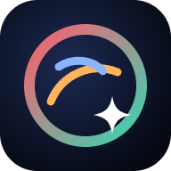

增像管天文模拟器
关于 · 隐私说明 · 免责声明 · 数据许可
这是什么
一个在浏览器里运行的夜视天文目镜模拟器：用公开巡天数据描述星云和恒星，用增像管（阴极、微通道板、荧光屏）的物理模型，在显卡上实时模拟每一个光子事件，展示不同增像管、滤镜和夜空条件下“目镜里大概会看到什么”。
本站免费、非商业，用于科普与研究，没有广告和付费内容。
隐私说明：不收集任何数据
- 没有统计、广告、账号或 Cookie。页面里没有任何分析或追踪代码，不会把你的操作、参数、设备信息发送到任何服务器。
- 参数只在链接里。分享链接
#s=…后面编码了模拟参数；按网页规范，#之后的内容不会发送给服务器，只有你把链接发给别人时对方才能看到。 - 本机存储。浏览器本地存储（localStorage）里只保存界面偏好：是否看过引导、画质选择、面板折叠状态，以及程序出错时的错误记录（错误信息、版本号和页面路径）。为了下次打开更快，看过的星图等数据文件和网页本身也会缓存在这台设备上（Cache API 与 Service Worker），内容和服务器上公开的文件完全一样。这些都不会上传；可以在模拟器的“设置 → 本机”里清除，或清除浏览器的网站数据。
- 错误记录只在本机。出错时你可以在“设置 → 本机 → 错误记录”里复制它，自己决定是否发给作者。复制的文字包含浏览器版本和屏幕尺寸，发送前可以看到全部内容。
- 托管服务。网页和数据文件由静态托管服务（目前是 GitHub Pages，可能经过 Cloudflare 等 CDN）提供，这些服务商可能按其自身政策记录常规访问日志（如 IP 地址）；本站不读取、不使用这些日志。
- 如果将来要加入任何访问统计，会事先在这里和模拟器中明确说明，并只在征得同意后启用。
免责声明：模拟结果不代表实物
- 画面、亮度、噪声和“等效参数纸”都是模型计算结果，用来理解增像管的原理和趋势，不代表任何品牌、型号或某一支具体增像管的实际观感或实测性能。预设名称只是参数组合，不是通用的产品规格。
- 模型依赖公开巡天数据、论文中的数值和若干假设（例如部分目标缺少实测的 [O III] 或 [S II] 图像、部分阴极与荧光屏曲线为估算）；这些缺口和假设在模拟器各处的“?”说明中有标注。实际目视效果还取决于望远镜、天气、个人视觉等，与模拟可能有明显差异。
- 请勿把模拟结果作为购买、交易、安全或任何专业用途的依据。夜视设备的购买和使用请遵守当地法律法规。
- 本站按“现状”提供，不对使用本站或依据模拟结果造成的任何后果承担责任。
数据来源与许可
本站只发布经过处理的衍生数据（重采样、换算单位、编码），不包含原始 FITS、论文原文或图片。各数据按来源要求署名；其中部分数据禁止商业使用，这也是本站保持非商业的原因之一。
| 数据 | 用途 | 许可 / 署名要求 |
|---|---|---|
| NSNS DR0.2（S. Ziegenbalg） | 北天星云 Hα、[O III]、[S II] 图像 | CC BY-NC-SA 4.0：署名、非商业、相同方式共享。本站的 NSNS 衍生数据同样只能按此许可非商业使用。doi:10.3847/2515-5172/adfec7 |
| DSS2（UK Schmidt 底片） | 上帝之眼细节层 | 版权材料：底片版权属 Anglo-Australian Observatory / Royal Observatory Edinburgh，由 STScI 数字化；科研、教学和非营利用途可免费使用并署名，商用须许可 |
| SHASSA（Gaustad et al. 2001） | 南天 Hα 与连续谱 | 图像版权属 Las Cumbres Observatory, Inc.，科研和教育用途免费，商用须许可。致谢：the Southern H-Alpha Sky Survey Atlas (SHASSA), which is supported by the National Science Foundation（Gaustad, McCullough, Rosing & Van Buren 2001, PASP 113, 1326） |
| VPHAS+ DR4（ESO 177.D-3023） | 船底座、M8、M16 细节层 | ESO 科学档案，CC BY 4.0（Drew et al. 2014） |
| SDSS-V LVM | 上帝之眼谱线亮度 | SDSS 公开数据（Sánchez et al. 2026），按 SDSS 要求致谢；商业用途须 ARC 批准 |
| Finkbeiner (2003) Hα 全天图 | 广域背景 | NASA LAMBDA 发布（含 WHAM、VTSS、SHASSA），署名 |
| Gaia DR3 | 恒星位置与亮度 | ESA/Gaia/DPAC，CC BY-NC 3.0 IGO（非商业），经 CDS VizieR 获取 |
| 依巴谷与第谷星表（ESA 1997） | 亮于 7 等的恒星 | ESA，经 CDS VizieR 获取，署名 |
| ESO SkyCalc | 夜空、气辉与月光光谱 | ESO 天空模型（Noll et al. 2012；Jones et al. 2013），署名 |
| CIE 表 | 光源与视见函数 | CIE 公开数值，署名 |
| 期刊论文 | 阴极、MCP、荧光屏等参数 | 只引用数值和关系，不包含论文的文字、表格或图片 |
完整的第三方声明（含算法与软件许可）见 THIRD_PARTY_NOTICES.txt。如果你是某项数据的权利人并对使用方式有疑问，请通过下方方式联系，会及时处理。
联系
作者：英国高级出摊工程师 · 微信：S0utherN
反馈问题时，可以附上模拟器“设置 → 本机 → 错误记录”里复制的内容，以及出问题时的分享链接。